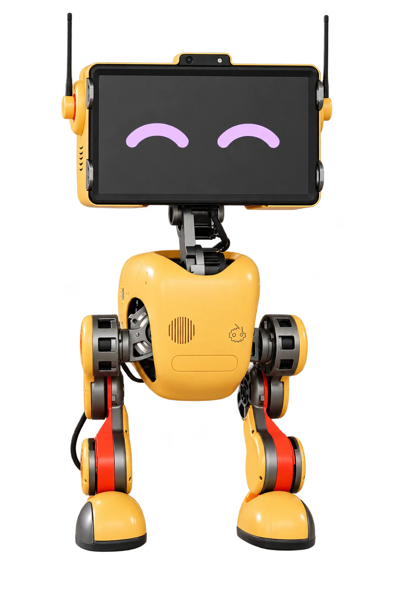

<!doctype html>
<html lang="zh-CN"><head><meta charset="utf-8"><meta name="viewport" content="width=device-width,initial-scale=1"><title>添加机器人 · 镋钯</title><link rel="stylesheet" href="assets/device-flow.css"><link rel="stylesheet" href="assets/phone-frame-v18.css"><link rel="stylesheet" href="assets/device-v19.css"><link rel="stylesheet" href="assets/activate-v19.css"></head>
<body><script src="assets/device-flow.js"></script><script>
const {icon,esc,shell,toast,$}=Fleet;
const state={step:1,method:'scan',network:'wifi',sn:'TP-N08-202610',ssid:'',name:'迎宾机器人 · N08',group:'未分组'};
const nearbyNetworks=[{name:'Tangpa-Guest',note:'当前手机已连接'},{name:'Venue-Guest',note:'附近网络'},{name:'Venue-Office',note:'附近网络'}];
const labels=['选择接入方式','识别机器人','选择联网方式','连接网络','确认信息'];
function nav(next){state.step=next;render()}
function saveCurrent(){
 if(state.step===2&&state.method==='manual')state.sn=$('sn')?.value.trim()||state.sn;
 if(state.step===5){state.name=$('name')?.value.trim()||'';state.group=$('group')?.value||'未分组'}
}
function render(){
 const step=state.step;
 const steps=`<div class="activation-progress"><span>第 ${step} / 5 步</span><strong>${labels[step-1]}</strong><div class="stepper" aria-label="步骤 ${step} / 5">${[1,2,3,4,5].map(i=>`<i class="${i<=step?'done':''}"></i>`).join('')}</div></div>`;
 let body='';
 if(step===1)body=`<div class="flow-section"><div class="section-head"><h2>接入方式</h2></div>${[['scan','扫描机身二维码','扫描机身上的二维码','camera'],['bluetooth','蓝牙发现','查找附近机器人','wifi'],['manual','手动输入 SN','输入机器人序列号','robot']].map(([key,name,desc,ico])=>`<button class="choice-card ${state.method===key?'selected':''}" data-method="${key}">${icon(ico)}<span><strong>${name}</strong><small>${desc}</small></span></button>`).join('')}</div><button class="button primary block" id="next">继续</button>`;
 if(step===2)body=`<div class="page-intro"><h1>${state.method==='manual'?'输入序列号':state.method==='bluetooth'?'附近机器人':'扫描机器人'}</h1></div>${state.method==='manual'?`<label class="form-field"><span>序列号</span><input class="form-input" id="sn" placeholder="请输入机身 SN" value="${esc(state.sn)}"></label>`:`<div class="video-stage identify-stage"><div class="video-center">${icon(state.method==='scan'?'camera':'wifi',38)}<strong>${state.method==='scan'?'对准机身二维码':'正在查找附近机器人'}</strong></div></div><label class="choice-card selected"><span><strong>迎宾机器人 · N08</strong><small>SN ${esc(state.sn)}</small></span></label>`}<div class="button-row"><button class="button secondary" id="prev">上一步</button><button class="button primary" id="next">继续</button></div>`;
 if(step===3)body=`<div class="page-intro"><h1>选择联网方式</h1></div><button class="choice-card network-choice ${state.network==='wifi'?'selected':''}" data-network="wifi">${icon('wifi',23)}<span><strong>连接 Wi-Fi</strong><small>选择附近网络并共享给机器人</small></span></button><button class="choice-card network-choice ${state.network==='ap'?'selected':''}" data-network="ap">${icon('ap',23)}<span><strong>AP 局域网</strong><small>手机连接机器人热点，与机器人直接通信</small></span></button><div class="button-row"><button class="button secondary" id="prev">上一步</button><button class="button primary" id="next">继续</button></div>`;
 if(step===4)body=state.network==='wifi'?`<div class="page-intro"><h1>选择附近 Wi-Fi</h1><p>选择网络，通过手机共享给机器人。</p></div><div class="wifi-list" role="radiogroup" aria-label="附近 Wi-Fi 网络">${nearbyNetworks.map(network=>`<label class="wifi-option ${state.ssid===network.name?'selected':''}"><input type="radio" name="nearbyWifi" value="${esc(network.name)}" ${state.ssid===network.name?'checked':''}><span class="wifi-option-icon">${icon('wifi',20)}</span><span class="wifi-option-copy"><strong>${esc(network.name)}</strong><small>${esc(network.note)}</small></span><span class="wifi-option-check" aria-hidden="true">✓</span></label>`).join('')}</div><div class="button-row"><button class="button secondary" id="prev">上一步</button><button class="button primary" id="next">共享给机器人</button></div>`:`<div class="page-intro"><h1>连接机器人热点</h1></div><div class="ap-network">${icon('ap',30)}<span>机器人热点</span><strong>TP-N08</strong></div><ol class="ap-steps"><li>打开手机的 Wi-Fi 设置</li><li>连接机器人热点 TP-N08</li><li>返回应用，继续完成接入</li></ol><div class="button-row"><button class="button secondary" id="prev">上一步</button><button class="button primary" id="next">已连接，继续</button></div>`;
 if(step===5)body=`<div class="page-intro"><h1>确认机器人信息</h1></div><div class="panel activation-device"><div><strong>${esc(state.sn)}</strong><small>镗钯-EDU · ${state.network==='wifi'?'Wi-Fi · '+esc(state.ssid):'AP 局域网'}</small></div></div><div class="flow-section"><label class="form-field"><span>机器人名称</span><input class="form-input" id="name" value="${esc(state.name)}" maxlength="24"></label><label class="form-field"><span>所在分组</span><select class="form-input" id="group">${['未分组','大厅 A 区','接待组','研发测试'].map(x=>`<option ${state.group===x?'selected':''}>${x}</option>`).join('')}</select></label></div><div class="button-row"><button class="button secondary" id="prev">上一步</button><button class="button primary" id="finish">完成接入</button></div>`;
 shell('添加机器人',steps+body,'<span class="head-spacer" aria-hidden="true"></span>');
 if(step===1)document.querySelectorAll('[data-method]').forEach(b=>b.onclick=()=>{state.method=b.dataset.method;state.sn=state.method==='manual'?'':'TP-N08-202610';render()});
 if(step===3)document.querySelectorAll('[data-network]').forEach(b=>b.onclick=()=>{state.network=b.dataset.network;render()});
 if(step===4&&state.network==='wifi')document.querySelectorAll('input[name="nearbyWifi"]').forEach(input=>input.onchange=()=>{state.ssid=input.value;document.querySelectorAll('.wifi-option').forEach(option=>option.classList.toggle('selected',option.querySelector('input').checked))});
 if($('prev'))$('prev').onclick=()=>{saveCurrent();nav(step-1)};
 if($('next'))$('next').onclick=()=>{saveCurrent();if(step===2&&state.method==='manual'&&!$('sn')?.value.trim()){toast('请输入序列号');return}if(step===4&&state.network==='wifi'&&!state.ssid){toast('请选择 Wi-Fi 网络');return}nav(step+1)};
 if($('finish'))$('finish').onclick=()=>{saveCurrent();if(!state.name){toast('请输入机器人名称');return}renderSuccess()};
}
function renderSuccess(){shell('接入完成',`<div class="activation-success"><div class="empty-mark">${icon('check',34)}</div><h2>机器人已接入</h2><p>${esc(state.name)} · ${esc(state.group)}</p><div class="button-row"><a class="button secondary" href="activate.html">继续添加</a><a class="button primary" href="home.html">返回机器人列表</a></div></div>`,'<span class="head-spacer" aria-hidden="true"></span>')}
render();
</script></body></html>
